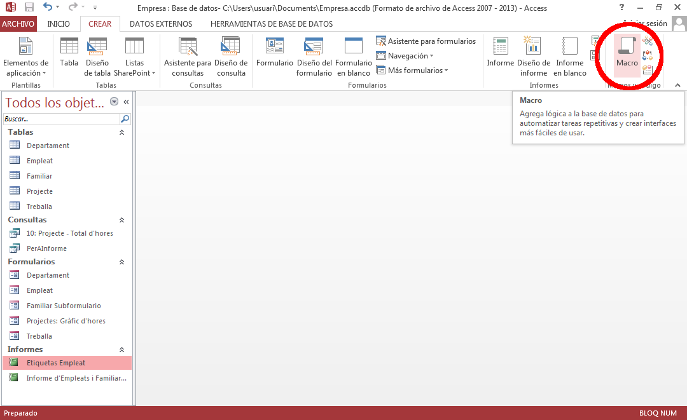
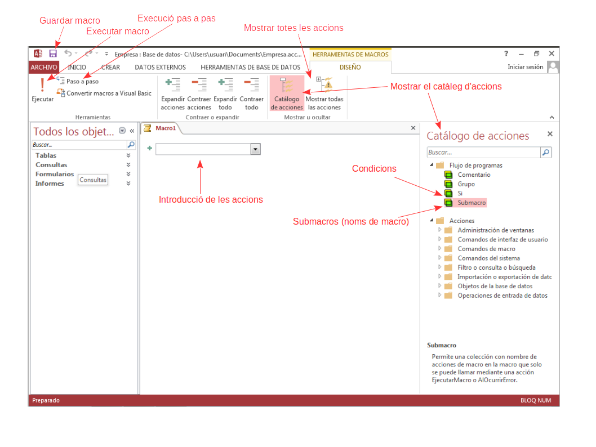
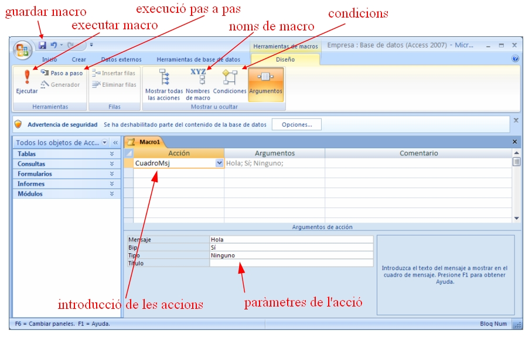
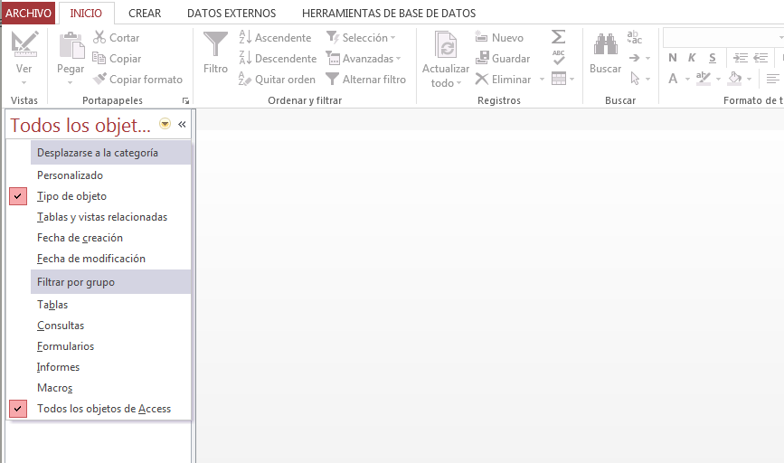
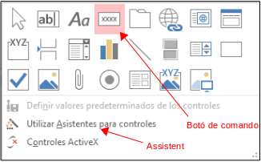
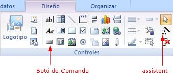

2.1 Creació d'una Macro
La manera inicial de crear una macro serà en la barra d'eines Crear a la dreta del tot, on hi ha un botó per a crear noves Macros o mòduls.

El que se'ns presentarà per a construir la macro serà el següent:

El següent vídeo mostra tot el procés de creació de la primera macro, ben senzilleta.
Una vegada creada la macro es pot executar amb el botó d'execució (si estem editant-la i demanant-nos prèviament que la guardem).
Si ja està guardada, podem executar-la amb l'opció "Ejecutar" del menu emergent (botó de la dreta sobre el nom de la macro), o senzillament fent doble-clic damunt d'ella.
Les coses estaven distribuïdes de forma diferent en Access 2007. Observeu sobretot que els Noms de macro (Submacros) i Condicions (Si) estaven dalt, en compte d'estar a la dreta com ara.

Exercici 2.1
En la B.D. de l'empresa, feu la macro de la figura de dalt, però amb el títol "Missatge de salutació". Guardeu-la amb el nom "Salutació" i executeu-la.
Ara ja podrem veure la macro a l'esquerra, en l'apartat de macros. Si no la veieu i esteu segurs que l'heu creada, segurament és perquè Access no està configurat en aquest moment per veure tots els objectes. Trieu l'opció Todos los objetos de Access del Pannell d'exploració (el que hi ha a l'esquerra), com us mostra la següent imatge:

Aquesta macro és del tipus Macro Independent, que vol dir que no depén de cap altre objecte, i sempre la tindrem disponible.
Com ja es va comentar serà molt normal enllaçar la macro amb algun event. Per exemple quan fem clic a un botó d'un formulari.
Exercici 2.2
Creeu-vos un formulari nou, sense utilitzar cap assistent de manera que quede en blanc, sense res. S'aconsegueix anant al botó Diseño de formulario. Quan el guardeu li poseu el nom "Botons". Afegiu un botó de comando (mireu figura), però de moment sense utilitzar l'assistent ("vareta màgica" desactivada; mireu figura). El que volem és traure el missatge de salutació quan fem clic en el botó. Per aconseguir-ho, aneu a les propietats (botó dret sobre el botó, o tenint-lo seleccionat anar a Hoja de Propiedades) a la pestanya "eventos", sobre l'esdeveniment "al hacer clic" trieu la macro Salutació. Per acabar, canvieu el rètol Comando0 per Saludar. Ho podeu fer directament sobre el botó, o canviant la propietat "Titulo"


Per a poder comprovar el seu funcionament, haurem "d'executar el formulari", és a dir anar de la "Vista Diseño" del Formulari a la "Vista Formulario".
Ara anem a crear una Macro que no serà Independent, sinó associada a un objecte. Ho aprofitarem per veure una manera més ràpida per fer el procés de creació d'una macro associada a un esdeveniment.
Exercici 2.3
Col·loqueu un altre botó, amb el títol Despedir. Aneu a la pestanya d'esdeveniments de les propietat. Però en compte de triar la macro en l'esdeveniment "al hacer clic", feu clic als tres puntets del costat. Trieu l'opció "Generador de macros". Automàticament va a crear-la. Trieu una altra vegada un quadre de missatge (CuadroDeMensaje) i poseu el missatge "Adéu". Ara tindrem 2 possibilitats de guardar-la.
- Si apretem l'opció de Guardar como l'estarem creant com una Macro independent (la veurem en l'apartat de Macros del Pannell d'exploració). És possible que en Access 2013 no ens done aquesta possibilitat.
- Si apretem a l'opció de Guardar o quan tanquem la Macro contestem afirmativament la pregunta de ¿Desea guardar los cambios realizados en la macro y actualizar la propiedad? l'estarem creant com una Macro incrustada en l'objecte actual (que és un botó de comando), i no la veurem en l'apartat de Macros del Pannell d'exploració.
Trieu aquesta segona possibilitat, i veureu com en l'esdeveniment "al hacer clic" us posarà [Macro incrustada]
Ja hem vist dues maneres d'anar a la creació d'una macro. En veurem una tercera, que serà utilitzant l'assistent. L'assistent ens proposarà que triem una de entre les accions més comunes a l'hora d'utilitzar un botó
Exercici 2.4
Col·loqueu un tercer botó però activant prèviament l'assistent ("vareta màgica"). Entre les accions possibles que ens proposa, agrupades per categories, triarem "Ejecutar macro", del grup "Otras". Presentarà les macros independents creades fins el moment. Triem l'única creada fins el moment, Salutació. Podeu posar una imatge en el botó, o un comentari. Deixeu la imatge.
El resultat ha estat que l'assistent ha creat una Macro incrustada que a la seua vegada executa l'acció Executar Macro, concretament la macro Salutació. Ho podeu comprovar mirant les propietats del botó.
Nota
En versions anteriors a Access 2007, que no existien les macros incrustades, l'assistent el que feia era introduir un procediment en Access Basic (unes quantes instruccions).
Per a editar una macro ja creada:
- si és una macro independent es pot fer des del Pannell d'exploració, apretant amb el botó de la dreta damunt de la macro i triant "Vista diseño", o si està associada a algun event d'un control d'un formulari, fent clic als tres puntets del costat.
- si és una macro incrustada només ho podrem fer d'aquesta segona manera.
Llicenciat sota la Llicència Creative Commons Reconeixement NoComercial SenseObraDerivada 2.5